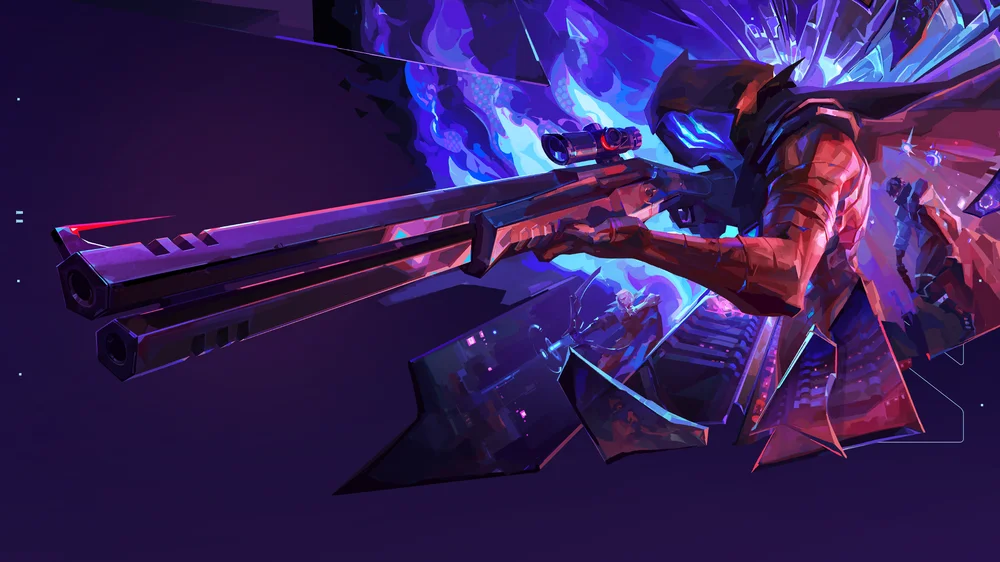

Ano de criação: 2020
País de origem: Estados Unidos
Autor/Desenvolvedora: Riot Games
Ano de criação: 2020
País de origem: Estados Unidos
Autor/Desenvolvedora: Riot Games
Valorant é um jogo de tiro tático em primeira pessoa (FPS) em que duas equipes de cinco jogadores competem entre si, alternando entre
ataque e defesa. O objetivo principal geralmente envolve plantar ou desarmar o “Spike”, exigindo estratégia e cooperação.
O jogo se destaca pelos agentes, personagens com habilidades únicas que influenciam as partidas, como visão de inimigos, controle de
áreas e suporte ao time. Além da boa mira, é essencial ter trabalho em equipe e planejamento.Com foco competitivo,
Valorant se tornou muito popular nos eSports, reunindo jogadores do mundo todo em partidas estratégicas e dinâmicas.
Em torno de 2000 horas de jogo
